Welkom.
Op deze website ziet u een impressie van het 60 jarige huwelijksfeest van Klaas en Riek Spaargaren.
Veel kijkplezier!
 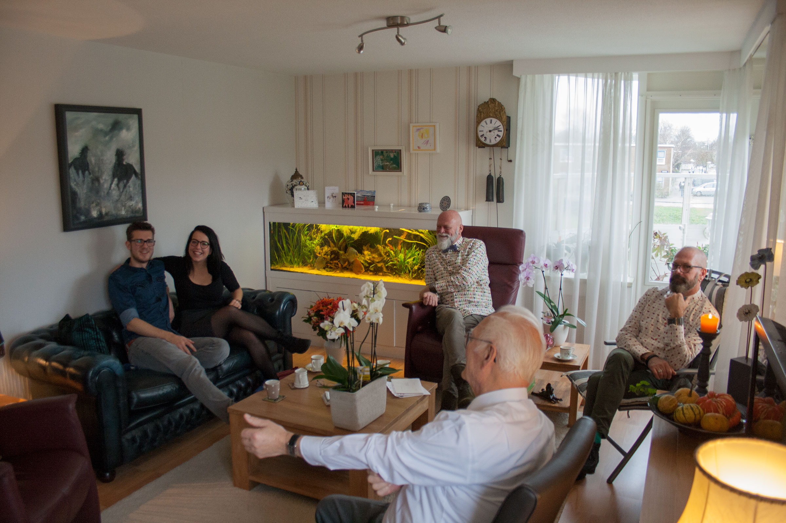
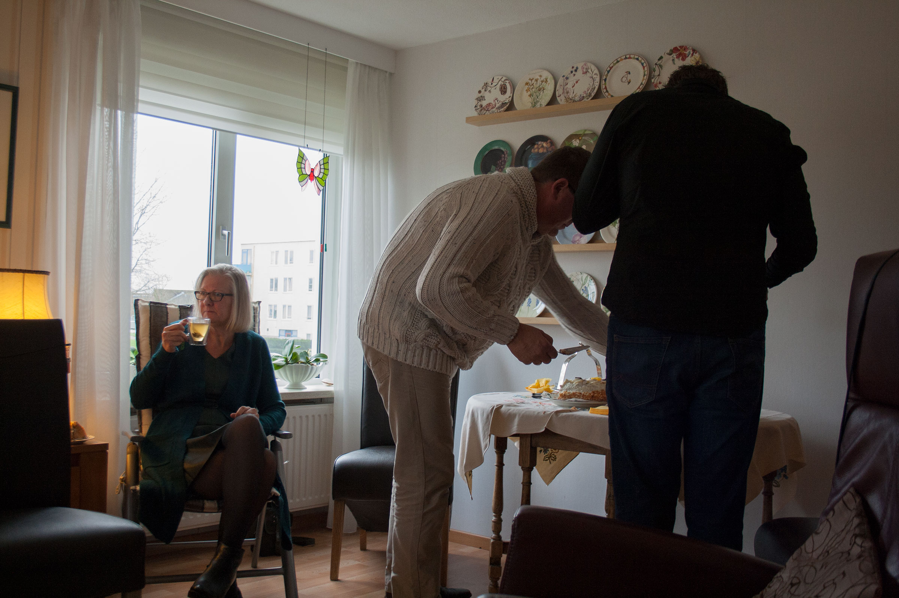
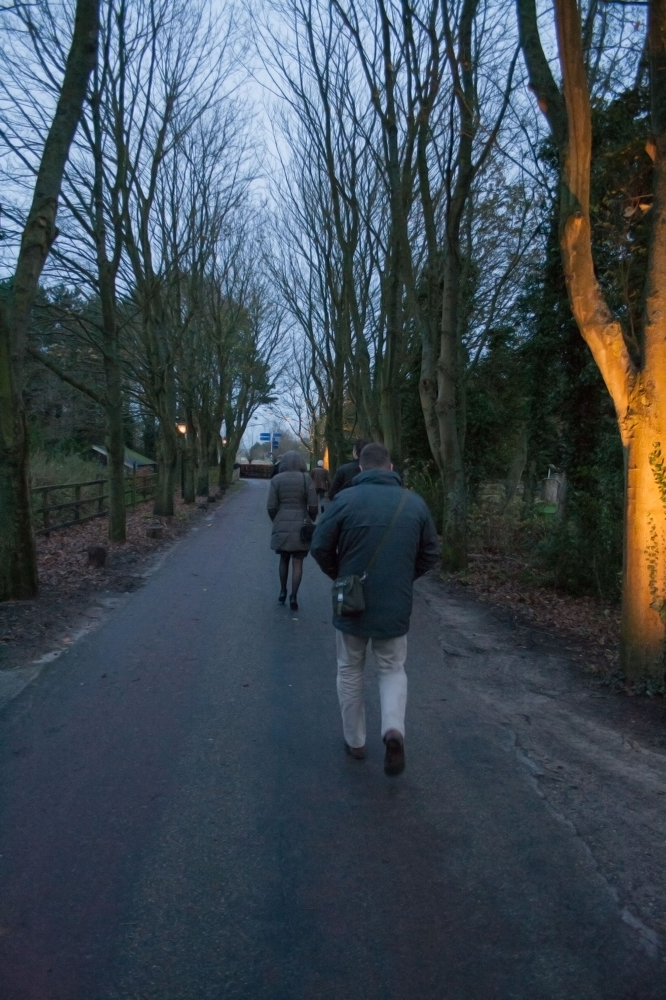
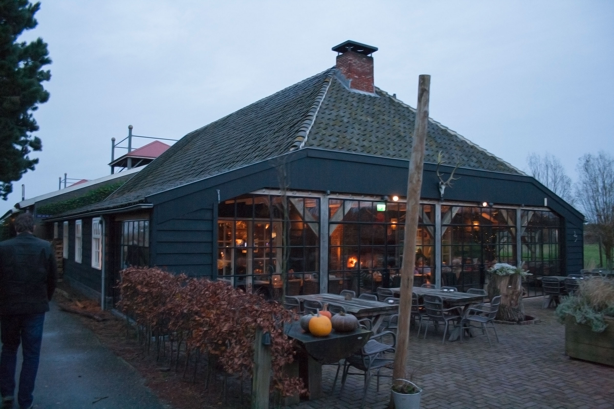
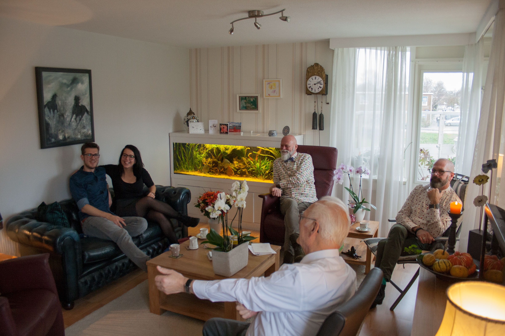
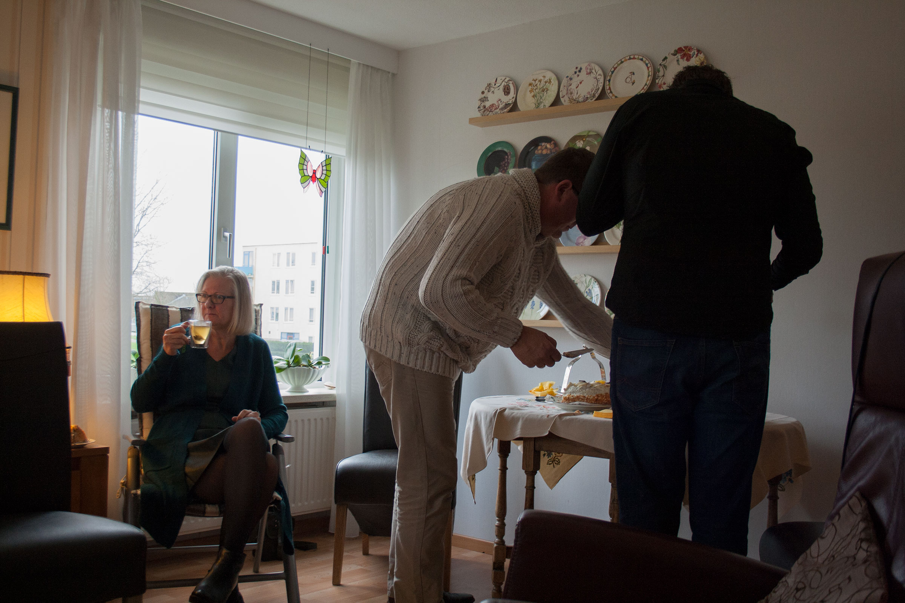
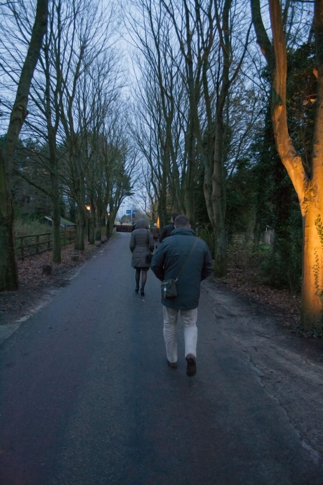
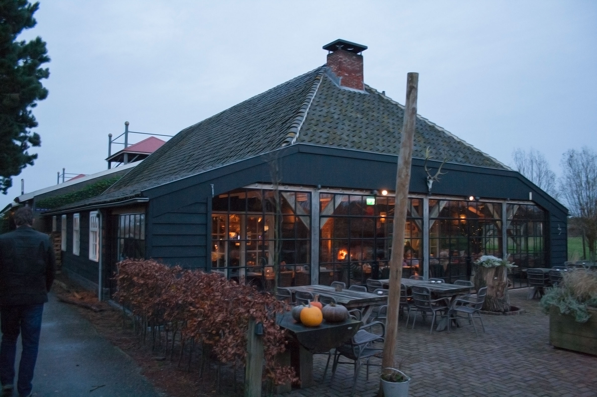
Op deze website ziet u een impressie van het 60 jarige huwelijksfeest van Klaas en Riek Spaargaren.
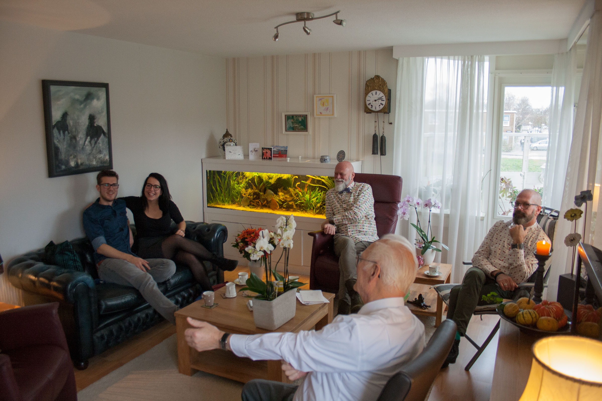
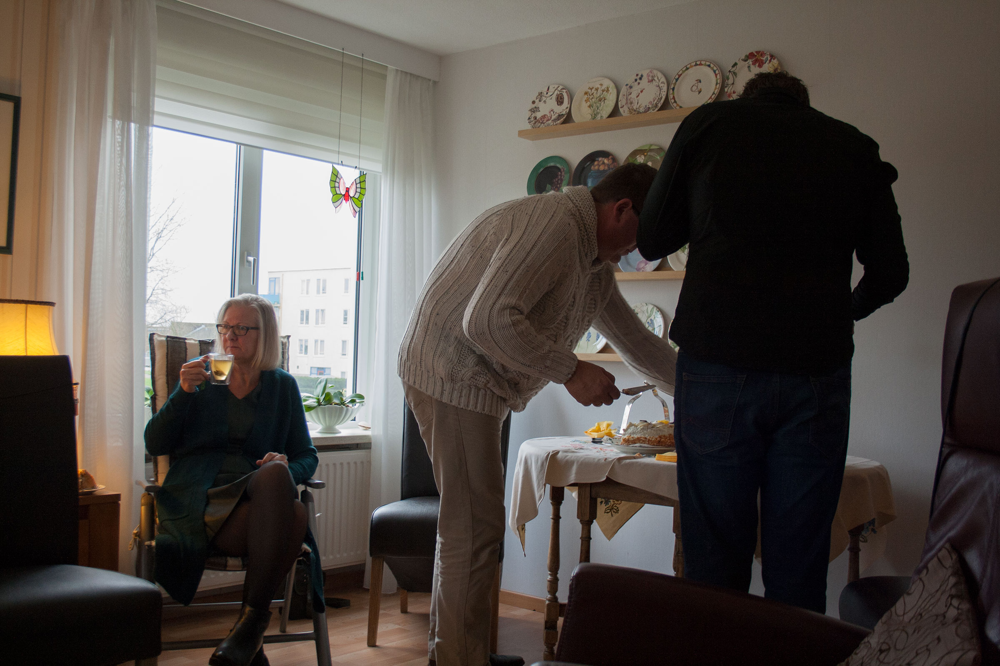
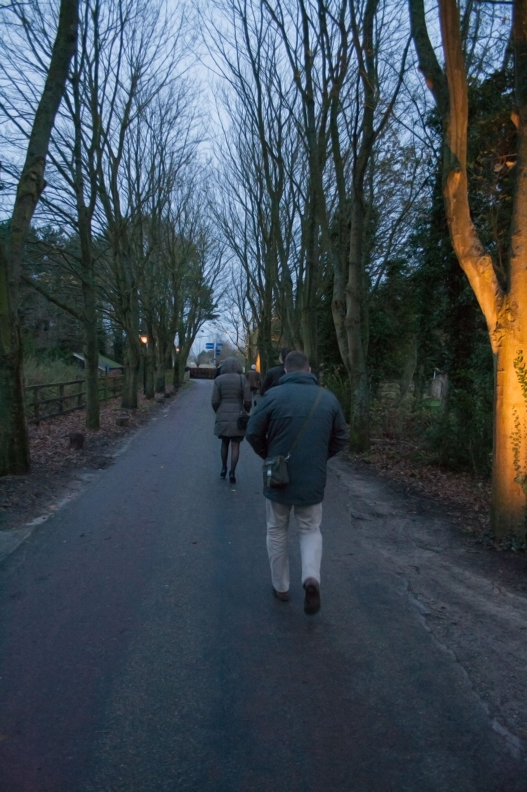
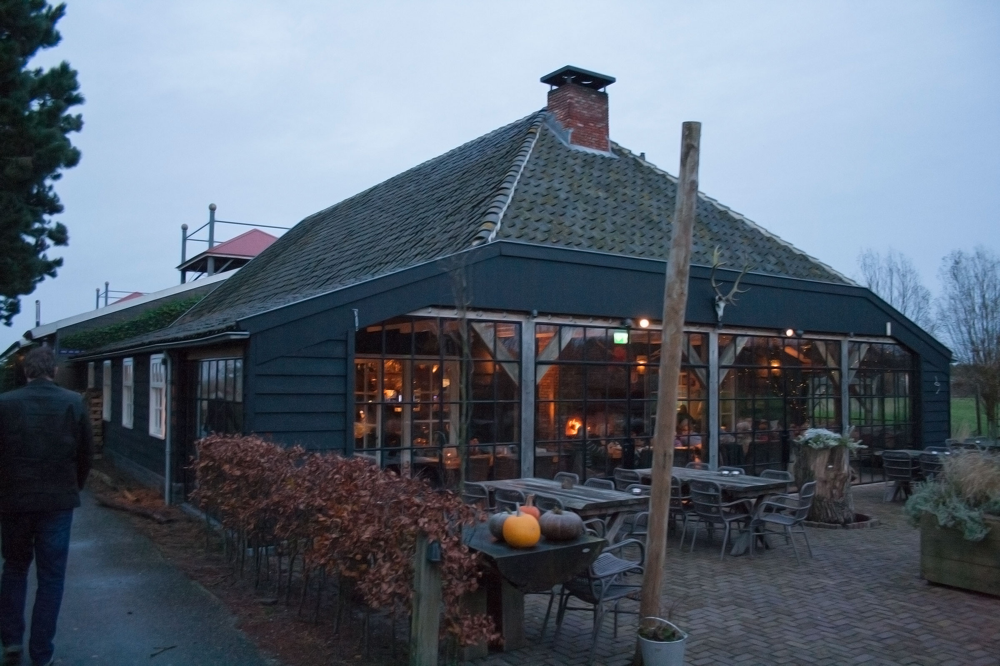